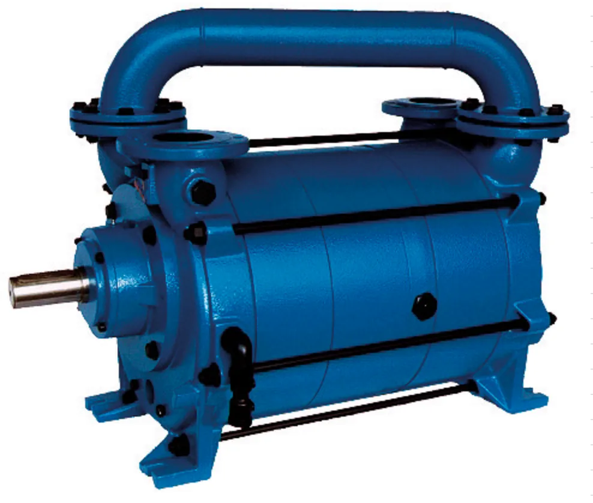
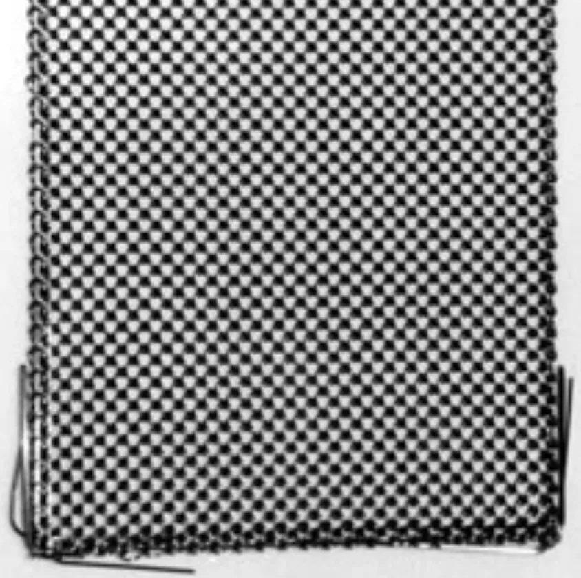
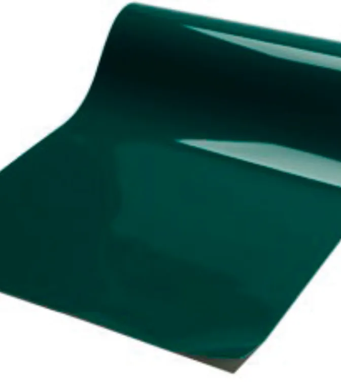
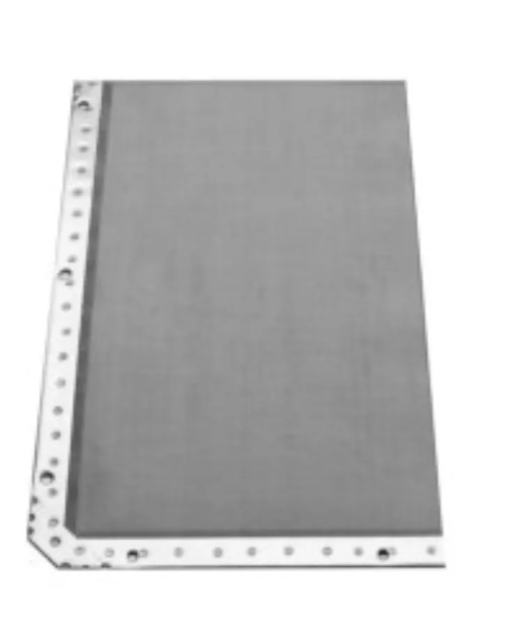
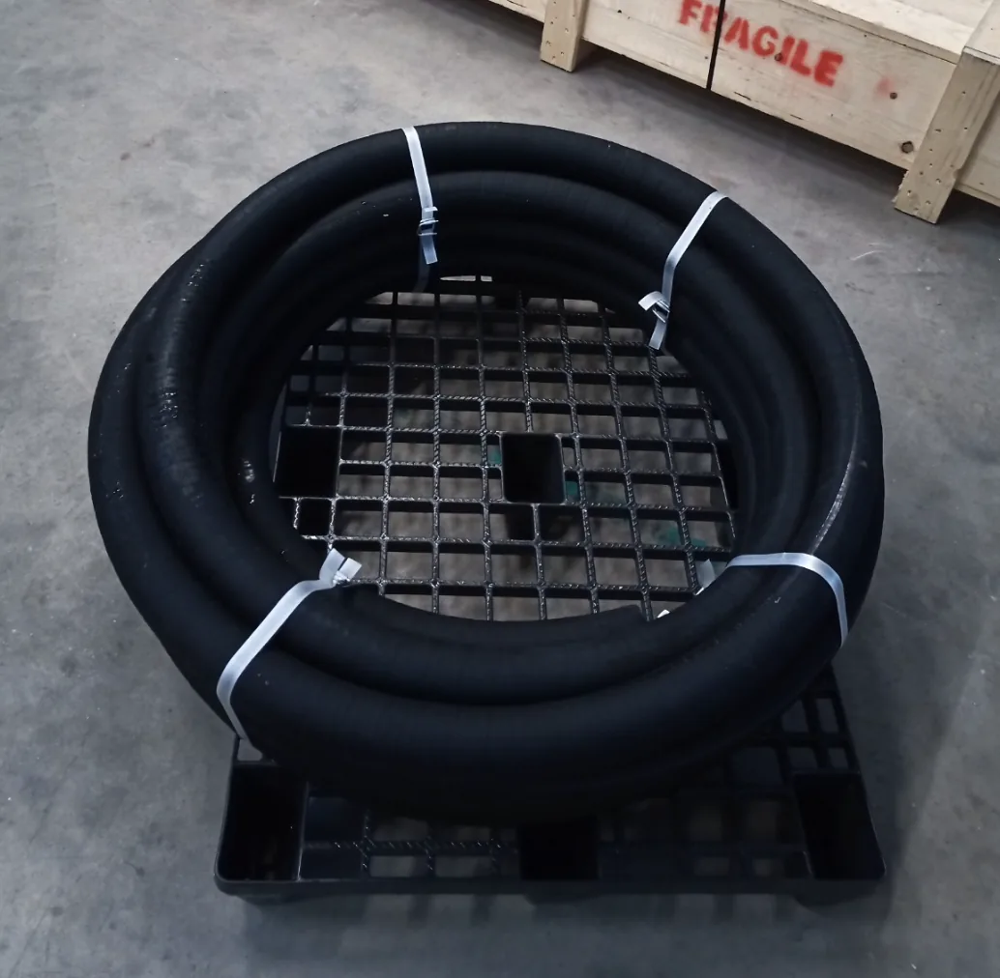

Vacuum Dryer
Spare Parts
Spare parts and consumables for leather vacuum drying machines — PVC beds, double crossed mesh, fine mesh, vacuum pumps and water tubes. Sourced for your machine and quality-checked before they ship.

Reduce Downtime
Keep PVC beds, mesh and pump parts on the shelf. When the vacuum drops or the plate stops drawing evenly, swap the wear part and your drying line is back in production in minutes, not days.
Protect the Area
A sound bed, clean mesh and a strong vacuum dry the leather flat and fast at low temperature — locking in the surface area gained in setting out and keeping the grain mark-free.
Matched To Your Machine
Beds, mesh, pumps and tubes identified against your exact plate size, brand and model — original and compatible, with no minimum order quantity.
Spare Parts for
Leather Vacuum Drying
Kymera Group supplies spare parts and consumables for the leather vacuum drying machines used in tanneries worldwide. The vacuum dryer dries the hide on a heated stainless steel plate under reduced pressure: the vacuum lowers the boiling point of water, so moisture evaporates quickly at a low temperature, drying the leather flat and fast while protecting the grain.
From the consumables that touch the leather every cycle — the PVC bed, the double crossed drainage mesh and the fine mesh — through to the vacuum pump that creates the low pressure and the water tubes that heat the plate, we source the right component for your specific machine. Tell us your brand, model and plate size, and we'll match the part, confirm the specification and quote it for you.

The Complete
Vacuum Dryer Catalogue
From PVC beds and mesh to vacuum pumps and water tubes — everything your vacuum drying machine needs, matched to your plate size and model and quality-checked before dispatch.

PVC Bed
The flexible covering blanket that seals the leather against the heated plate so the vacuum can form — protects the plate and is replaced periodically as a wear item.
Request a QuoteDouble Crossed Mesh
Drainage mesh that sits on the heated plate and creates the channels carrying vapour and water away evenly across the full surface for uniform drying.
Request a Quote
Fine Mesh
The fine top mesh between the leather and the drainage mesh — lets vapour escape while preventing any pattern or mark from transferring to the grain side.
Request a Quote
Vacuum Pump
Vacuum pumps and pump spare parts that create the low pressure inside the chamber, lowering the boiling point of water so the leather dries fast at low temperature.
Request a Quote
Water Tubes
Water tubes for the heated plate — circulate hot water through the plate to hold a uniform drying temperature right across the surface.
Request a QuoteGeneral Spare Parts
Seals, gaskets, valves and wear parts for vacuum drying machines — tell us your brand and model and we'll identify the correct part.
Request a QuoteVacuum Drying, Step by Step
After setting out, the vacuum dryer dries the leather flat and fast at low temperature. The hide is laid on a heated plate, sealed under a bed and mesh, and a vacuum draws the moisture out — here is the cycle on the production floor.
Lay the Hide
The wet hide is spread grain-down on the heated stainless steel plate, over the drainage and fine mesh, flat and square.
Seal & Vacuum
The PVC bed lowers and seals the chamber, and the vacuum pump draws the air out, dropping the pressure over the leather.
Dry at Low Heat
Hot water in the plate tubes warms the leather; under vacuum the moisture boils off at low temperature and is carried away through the mesh.
Release & Unload
The vacuum releases and the dried, flat hide is lifted clear — grain protected, area fixed and ready for the next stage.
Your Questions,
Answered
How does a leather vacuum dryer work?
The wet hide is placed on a heated stainless steel plate, covered and put under vacuum. The reduced pressure lowers the boiling point of water, so moisture evaporates rapidly at a low temperature — drying the leather flat and fast while fixing the area gained earlier and protecting the grain.
What is the PVC bed on a vacuum dryer?
The PVC bed is the flexible covering blanket that seals the leather against the heated plate so the vacuum can form. It protects the plate surface and, with the mesh layers, lets vapour be drawn off uniformly. It is a wear item replaced periodically.
What is the difference between the double crossed mesh and the fine mesh?
The double crossed mesh sits on the heated plate and creates the channels that carry vapour and water away across the surface. The fine mesh lies on top, between the drainage mesh and the leather, so vapour escapes while no pattern is transferred to the grain side.
Which vacuum dryer brands do your spare parts fit?
Our parts and consumables are compatible with the most widespread brands, including Cartigliano, Mostardini, Sandt, Bergi and Escomar. Tell us your machine model and we will confirm the correct part for you.
Is there a minimum order quantity?
No. We supply beds, mesh, pumps, tubes and spare parts with no minimum order quantity — a single mesh, a replacement bed or a complete consumables package, with the same care.
Can you help identify the right vacuum dryer part for my machine?
Yes. Send us your vacuum dryer brand, model and the plate size or a photo of the worn part — our team will identify the correct replacement and quote it for you.
Send Your Request
Tell us your vacuum dryer brand, model and plate size, the part you need and the quantity — we'll come back to you with the right component, the right price, and a clear lead time.